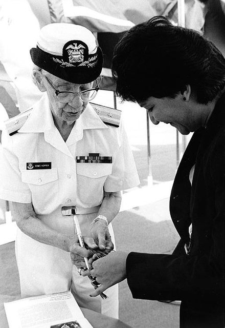
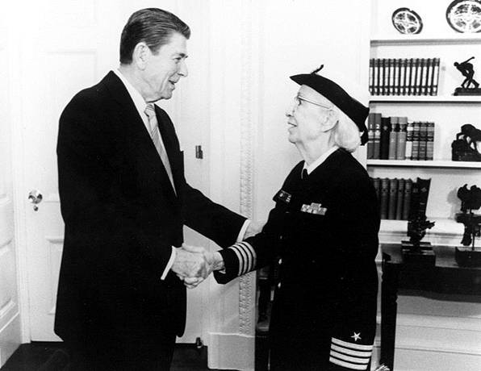

Награды и признание.
В 1969 году награждена премией «Человек года в информатике» Ассоциации профессионалов индустрии информационных технологий (AITP). В 1970 году стала лауреатом мемориальной премии Гарри Гуда. В 1971 году Ассоциацией вычислительной техники учреждена ежегодная премия Грейс Хоппер. В 1973 году стала первым гражданином США и первой женщиной вообще, ставшей почётным членом Британского компьютерного общества. В 1979 году стала лауреатом премии Макдауэлла, в 1983 году — премии премии Ады Лавлейс[англ.] от Ассоциации женщин в области вычислительной техники. По выходе в отставку в 1986 году была награждена «Медалью за безупречную службу» — высшей наградой нестроевой службы Министерства обороны США. В 1987 стала лауреатом Fellow Awards, в 1988 году — премии Эмануэля Пиора и премии «Золотой молоток» на международном съезде «Toastmasters» в Вашингтоне. В 1991 награждена Национальной медалью США в области технологий и инноваций. В 1996 спущен на воду эскадренный миноносец USS Hopper (DDG-70). В 2009 году сотрудники Национального вычислительного центра энергетических научных исследований Министерства энергетики США назвали одну из вычислительных систем Hopper. Ряд объектов ВМС США назван в честь Хоппер, в частности, административное здание в Аннаполисе, авиационная база в Норт-Айленде, станция связи в Сан-Диего, здание центра повышения квалификации Абердинского испытательного полигона в Мэриленде, мост на территории базы в Чарльстоне (Южная Каролина). В Департаменте информатики Йельского университета учреждена именная профессорская должность в честь Грейс Хоппер, с 2008 года её занимает Джоан Фигенбаум. Ежегодно проводится конференция «Grace Hopper Celebration of Women in Computing», посвящённая проблемам карьеры женщин в областях вычислительной техники.